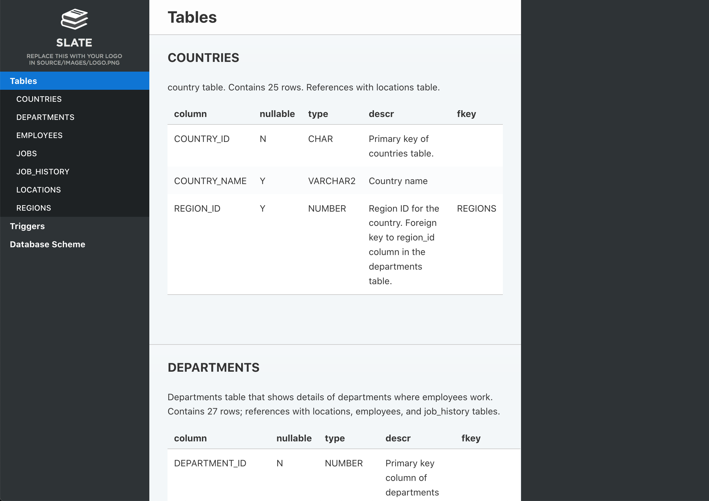

Documenting Oracle Database¶
Please note that in this article we cover only the basic usage of the tools. For detailed information on features and customizing output refer to each component’s doc page.
Installing prerequisites¶
First you will need to install some prerequisites. If you are running Foliant natively, follow the guide below. If you are working with our Full Docker image, you don’t need to do anything just now, you can skip to the next stage.
First, you will need Foliant, of course. If you don’t have it yet, please, refer to the installation guide.
Next, let’s install Foliant Init to facilitate the task of creating new project:
$ pip3 install foliantcontrib.init
Install DBDoc and PlantUML preprocessors, and the Slate backend:
$ pip3 install foliantcontrib.dbdoc foliantcontrib.slate, foliantcontrib.plantuml
We are going to use Slate for building a static website with documentation, so you will need to install Slate dependencies.
Install PlantUML, we will need it to draw the database scheme.
Install Oracle Instant Client, if you don’t have it. We will needed it to query the database.
Creating project¶
Let’s create a Foliant project for our experiments. cd to the directory where you want your project created and run the init command:
$ cd ~/foliant_projects
$ foliant init
Enter the project name: Database Docs
Generating project... Done
────────────────────
Project "Database Docs" created in database-docs
$ cd database-docs
The other option is to clone the Foliant Project template repository:
$ cd ~/foliant_projects
$ mkdir database-docs
$ git clone https://github.com/foliant-docs/foliant_project_template.git database-docs
Cloning into 'database-docs'...
remote: Enumerating objects: 11, done.
remote: Counting objects: 100% (11/11), done.
remote: Compressing objects: 100% (7/7), done.
remote: Total 11 (delta 1), reused 11 (delta 1), pack-reused 0
Unpacking objects: 100% (11/11), done.
$ cd database-docs
Setting up project¶
Now it’s time to set up our config. Open foliant.yml and add the following lines:
title: Database Docs
chapters:
- index.md
+preprocessors:
+ - dbdoc:
+ host: localhost
+ port: 1521
+ dbname: orcl
+ user: hr
+ password: oracle
+ - plantuml
+
Make sure to use proper credentials for your Oracle database. If you are running Foliant from docker, you can use host: host.docker.internal to access localhost from docker.
Note: if plantuml is not available under
$ plantumlin your system, you will also need to specify path to platnum.jar in preprocessor settings like this:
- plantuml:
plantuml_path: /usr/bin/plantuml.jar
Finally, we need to tell Foliant where in the source files should it insert the generated documentation. Since we already have an index.md chapter created for us by init command, let’s put it in there. Open src/index.md and make it look like this:
# Welcome to Database Docs
-Your content goes here.
+<dbdoc></dbdoc>
+
If you are using Docker, you will also need to add Oracle Instant Client to your image. Since it is a proprietary software, we cannot include it in our Full Docker Image. But you can do it yourself. Our image is based on Ubuntu, so you can find instructions on how to install Oracle Instant Client on Ubuntu (spoiler: it’s not that easy) and add those commands into the Dockerfile, or just find those commands made by someone else. For example, from this Dockerfile by Sergey Makinen. Copy all commands starting from the third line into your Dockerfile and run docker-compose build to rebuild the image.
Building site¶
All preparations done, let’s build our site:
$ foliant make site -w slate
Parsing config... Done
Applying preprocessor dbdoc... Done
Applying preprocessor plantuml... Done
Applying preprocessor flatten... Done
Applying preprocessor _unescape... Done
Making site... Done
...
────────────────────
Result: Database_Docs-2020-06-03.slate/
If you are using Docker, the command is:
$ docker-compose run --rm foliant make site -w slate
Now open Database_Docs-2020-06-03.slate/index.html and look what you’ve got:

That looks good enough, but you may want to tweak the appearance of your site. You can edit the Jinja-template to change the way DBMLDoc generates markdown our of your schema. The default template can be found here. Edit it and save in your project dir, then specify in the doc_template parameter. If you want to change the looks of you site, please, refer for instructions to the Slate backend documentation.